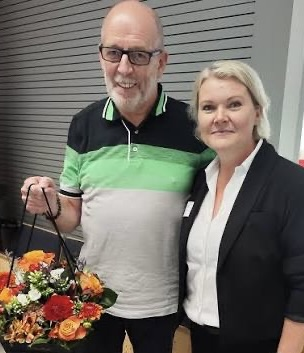

Als ich von Marburg nach Essen wechselte, begegnete mir in der pädiatrischen Onkologie eine andere Welt. In Marburg wurden in einem Jahr ungefähr fünfzehn Kinder mit einer bösartigen Erkrankung neu aufgenommen. Entsprechend selten gehörten diese Erkrankungen und ihre schweren Verläufe zum Alltag der Station. Der tägliche Umgang mit einem neu erkrankten Kind, mit bedrohlichen Komplikationen und auch mit dem Tod eines Kindes war für Ärzte und Pflegekräfte weniger selbstverständlich.
Das Pflegeteam in Marburg war den Patienten sehr nah. Das war an sich nichts Schlechtes, im Gegenteil. In kritischen Situationen fehlte jedoch manchmal der professionelle Abstand, der notwendig war, um weiterhin handeln zu können. Wenn ein Kind starb, geriet die Station leicht in einen Ausnahmezustand. Die Trauer erfasste das Pflegeteam so sehr, dass auch die Versorgung der anderen Patienten davon beeinflusst wurde.
In Essen waren die Dimensionen völlig andere. Dort wurden jährlich ungefähr hundert Kinder mit einer bösartigen Erkrankung neu behandelt, also ein Vielfaches der Marburger Zahl. Hinzu kamen Patienten mit besonders schweren Krankheitsbildern, bei denen eine Knochenmarktransplantation durchgeführt wurde. Ärzte und Pflegekräfte erlebten deshalb sehr viel häufiger lebensbedrohliche Komplikationen und Todesfälle. Wer längere Zeit auf dieser Station arbeitete, entwickelte zwangsläufig eine andere Professionalität.
Das bedeutete keineswegs, dass die Pflegekräfte weniger Anteil nahmen. Sie waren den Kindern und ihren Familien sehr zugewandt, wussten aber auch, wann ein gewisser Abstand notwendig war. Wenn es darum ging, einem Patienten zu helfen, nutzte es nichts, weinend in einer Ecke zu stehen. Dann musste man anpacken. Und das konnte dieses Essener Pflegeteam.
Zunächst war da Uta. Sie saß meist in der „Kanzel“, nahm die Anmeldungen entgegen und behielt den Überblick. Sie war so etwas wie die Managerin der Station. Eine wichtige Rolle spielte auch Pfleger Manfred Schneider, der seine Arbeit ausgesprochen gut machte. Zu seinem Team gehörten erfahrene, angenehme und hochprofessionelle Pflegekräfte. Die konnten richtig etwas wegarbeiten.

Eine Szene ist mir besonders in Erinnerung geblieben. Einer unserer jugendlichen Patienten litt an einer Leukämie, die nur schwer zu behandeln war. Seine Eltern waren Zeugen Jehovas. Die Mutter vertrat die damit verbundene Ablehnung von Bluttransfusionen sehr entschieden, während der Vater weniger überzeugt wirkte.
Bei der Behandlung einer Leukämie sind Transfusionen von roten Blutkörperchen, Blutplättchen und manchmal auch Blutplasma häufig lebenswichtig. In diesem Fall musste deshalb über jede einzelne Transfusion erneut mit den Eltern und besonders mit der Mutter gesprochen werden. Das war für die Ärzte und die Pflegekräfte enorm aufwendig. Die wiederkehrenden Auseinandersetzungen um notwendige Blutprodukte haben die Behandlung sicherlich nicht erleichtert und die Prognose des Jungen gewiss nicht verbessert.
Der Junge schaffte es schließlich nicht. Nach seinem Tod mussten ihn zwei Schwestern waschen und für die weitere Versorgung vorbereiten. Über die vielen Monate seiner Behandlung war er ihnen natürlich ans Herz gewachsen. Sie mussten ihre eigene Trauer zurückstellen und dennoch das tun, was nun zu tun war. Ich habe das Bild der beiden Schwestern bei dem verstorbenen Jungen bis heute vor Augen.
Sie taten ihre Arbeit mit einer Ruhe, Beherztheit und charakterlichen Stärke, die mich tief beeindruckte. Ihre Trauer war deshalb nicht geringer, aber sie hinderte sie nicht daran, dem Jungen auch nach seinem Tod mit Würde und Fürsorge zu begegnen. Das war etwas völlig anderes als das, was ich zuvor in vergleichbaren Situationen erlebt hatte. Für mich war es Professionalität im besten Sinne.
Das Essener Pflegeteam habe ich deshalb sehr bewundert. Es verband menschliche Nähe mit Erfahrung, Belastbarkeit und der notwendigen Distanz. In meiner gesamten beruflichen Laufbahn habe ich kein besseres Pflegeteam erlebt.
Den Song „Ich steh dir bei“ habe ich eigentlich aus meiner ärztlichen Sicht geschrieben. Beim Anfertigen dieses Textes habe ich aber gemerkt, dass der Song wohl noch besser die Emotionen des Essener Pflegeteams ausdrückt.